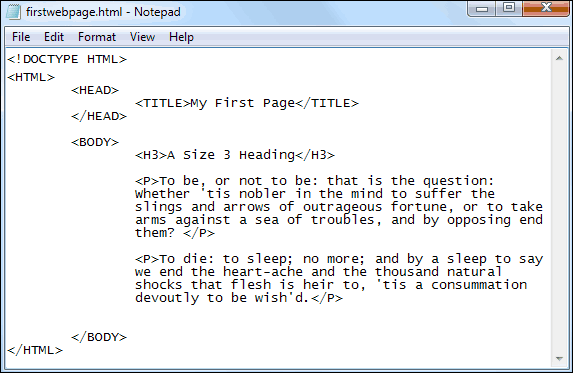
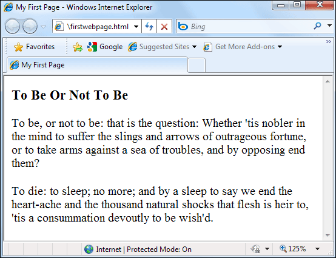
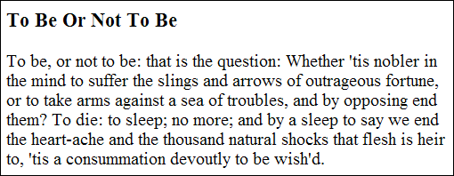
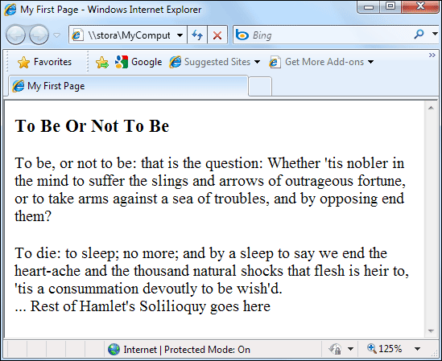

Paragraph and BR breaks
If you've ever used a word processor like Microsoft Word then you know that to start a new paragraph all you need to do is to hit the Enter key on your keyboard. The cursor will then move down, ready for you to start typing. In HTML, however, you can't do this. If you want to start a new paragraph, you have to use the P tags.
To try it out, add the following just below your Heading (You can use your own text, though, rather than type out the Hamlet soliloquy):
<P>To be, or not to be: that is the question: Whether 'tis nobler in the mind to suffer the slings and arrows of outrageous fortune, or to take arms against a sea of troubles, and by opposing end them? </P>
<P>To die: to sleep; no more; and by a sleep to say we end the heart-ache and the thousand natural shocks that flesh is heir to, 'tis a consummation devoutly to be wish'd.</P>
When you’ve finished, your HTML code should look like this: (Don’t worry about the indenting, though. We did ours just so it would look nice in this book. Only one press of the spacebar is recognised in HTML, everything else is ignored, including indents and carriage returns.)

Note the P tags:
<P></P>
You have to use the P tags whenever you want to start a new paragraph.
Strictly speaking, though, you don’t need the closing P tag. You can just do this to start a new paragraph:
<P>
To be, or not to be: that is the question: Whether 'tis nobler in the mind to suffer the slings and arrows of outrageous fortune, or to take arms against a sea of troubles, and by opposing end them?
<P>
To die: to sleep; no more; and by a sleep to say we end the heart-ache and the thousand natural shocks that flesh is heir to, 'tis a consummation devoutly to be wish'd.
The result is the same. But in modern web coding, it’s best to use the closing tag for paragraphs, so that you can add Styling rules. (You’ll learn how to do this a little later.)
Save your work and view the results in your browser. You should see this:

Notice the paragraphs breaks in the text. Notice, too, that although our code was indented, this doesn’t show up in the browser. The browser will ignore all those indents we had, and any extra white space. If you want white space you have “tell” the browser. You do this with the break tags, like P and BR (which you’ll see soon).
As an exercise, try deleting the P tags in your code. Save and refresh your browser. Watch what happens:

Without the P tags the text just runs on.
There is still, however, a paragraph break after the heading, even though we deleted all the P tags. This is because the H heading tags insert their own paragraph breaks.
The BR tag
The BR tag is used when you don’t want a full paragraph break. The space between lines of text is then reduced. The BR tag doesn’t need a closing tag, and can be just by itself.
As an example, add the following to the end of your text (the BR part).
<P>To die: to sleep; no more; and by a sleep to say we end the heart-ache and the thousand natural shocks that flesh is heir to, 'tis a consummation devoutly to be wish'd.
<BR>
... Rest of Hamlet's Soliloquy goes here
</BODY>
</HTML>
Notice that we've deleted the end P tag for the second paragraph. If you leave it in, you'll get a double line break from the two <P> tags, as well as a single line break from the <BR> tag.
Save your changes and switch to your browser. Press F5 to refresh the page and the results should look like this:

So if you don’t want a full, double-line break then remember to use the BR tag. And careful of the end P tags or you’ll end up more line breaks than you expected.
In the next lesson, we'll take a look at bold and italic text.